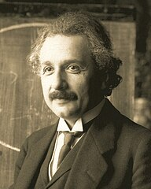

Albert Einstein

Albert Einstein was a German-born theoretical physicist who is best known for developing the theory of relativity.
- 1879: Born on 14 March in Ulm, Germany
- 1885-88: Attends a Catholic school
- 1903: Marries Mileva Maric
- 1922: Awarded 1921 Nobel prize for Physics.Publishes his first work on the unified field theory.
- 1928: Diagnosed with a heart condition
- 1955: With Bertrand Russell, draws up a manifesto against the nuclear threat. Dies at Princeton hospital
Wikipedia
Nobel Prize